Desenhando Doideras com Python
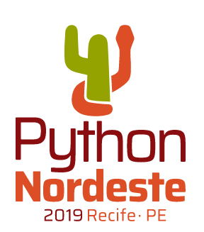Bernardo Fontes
20 de Julho de 2019
Olar!

berinfontes.com/talks
Outra 33ª Bienal de São Paulo
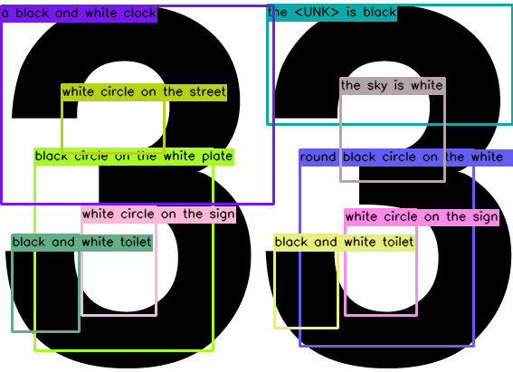Percursos verborrágicos
@outra33bienal
Código e Arte?

Quero! Mas como?
Uma lembrança...
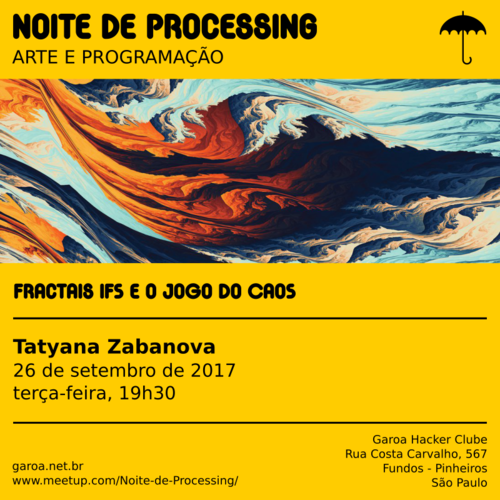SESC SP <3
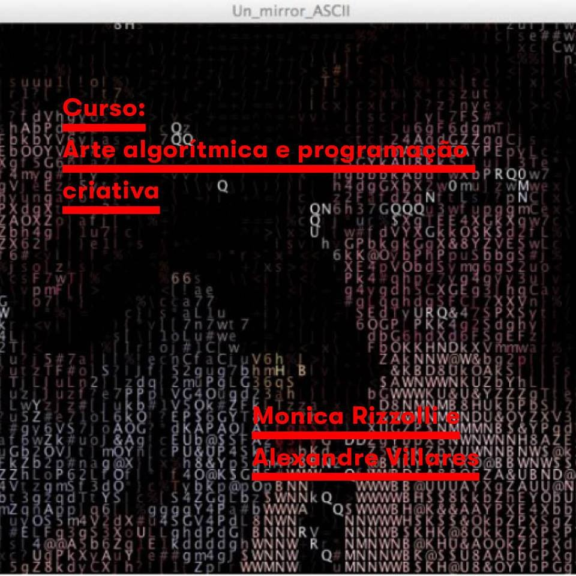Georg Ness - Generative Computergrafik
1965

Frieder Nake
1965
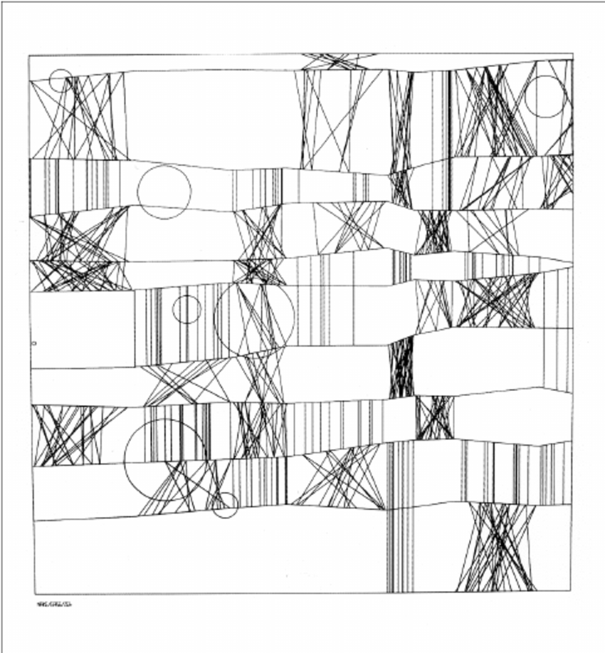Vera Molnár
1968 / 1969
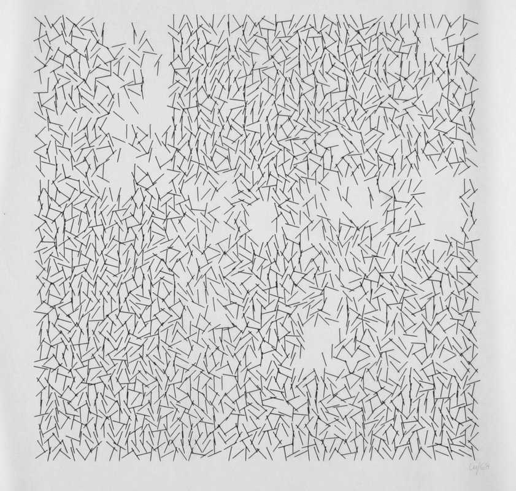Lillian Schwartz
1970
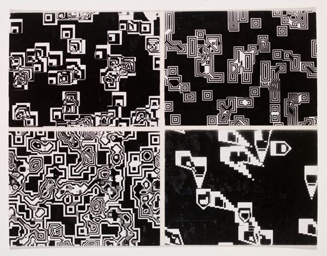@manoloidee

@inconvergent

Saskia Freeke
@sasj_nl

Frederik Vanhoutte
@wblut
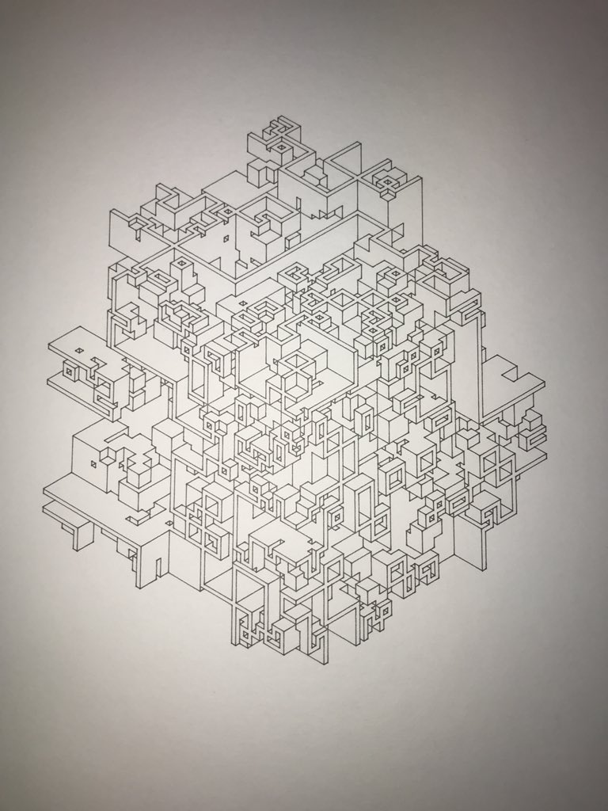Código, arte e Python!?!?!?
Junho 2018 - Primeiro sketch

Código fonte em Java
PythonBrasil[14] - Projeto
2019 - Daily Sketches
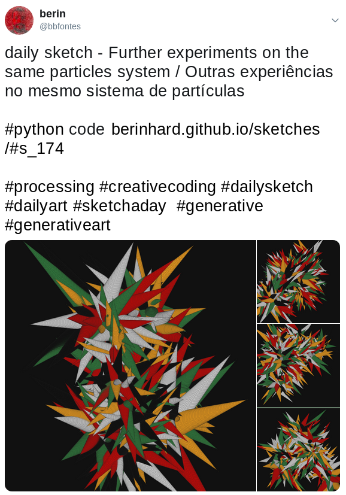E hoje...
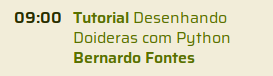10 PRINT
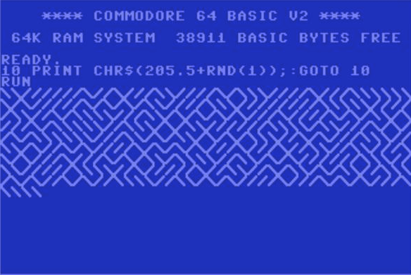Random Walker

Sistemas de Partículas
Em Recife toda última quarta-feira do mês*
*com exceção desse mês
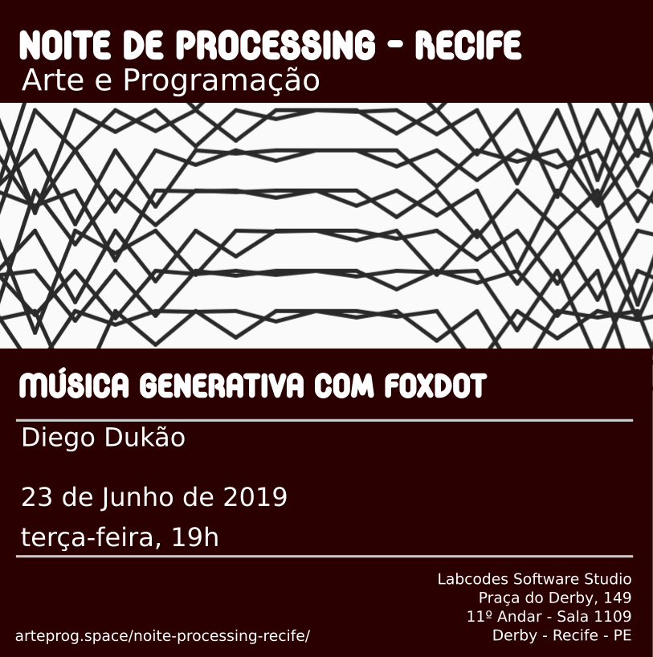No Garoa (São Paulo) toda última terça-feira do mês
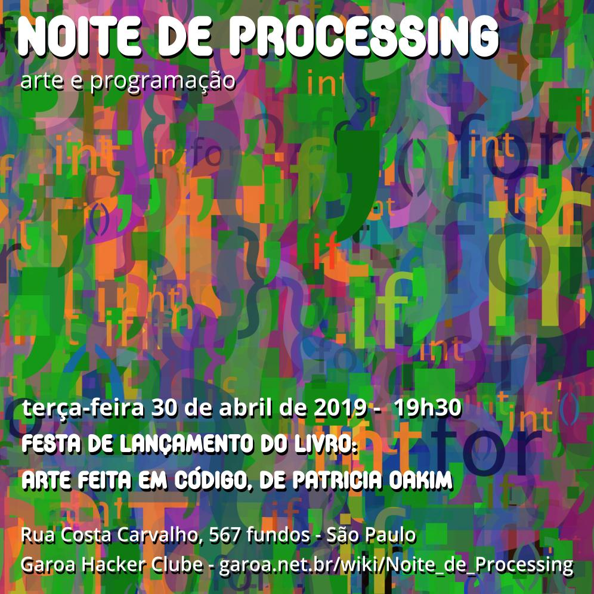Obrigado!